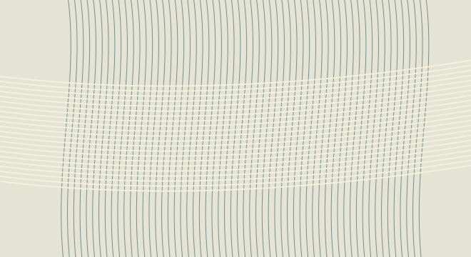
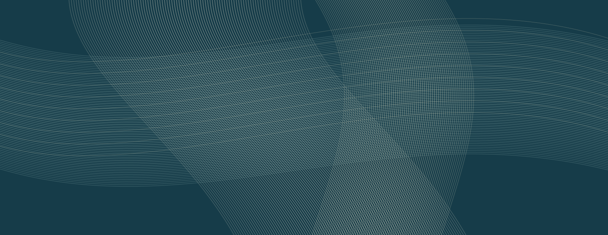
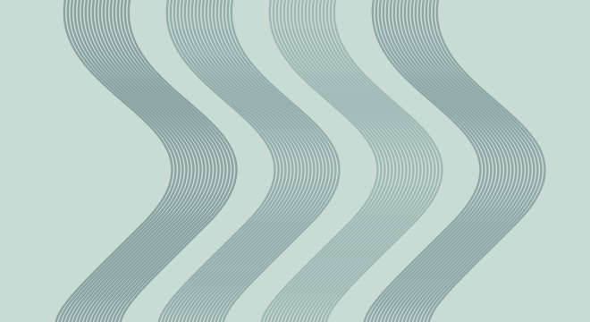
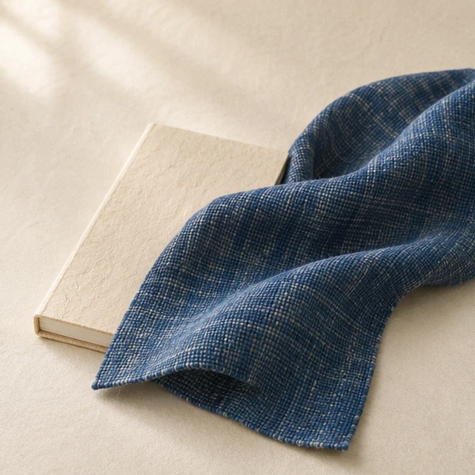
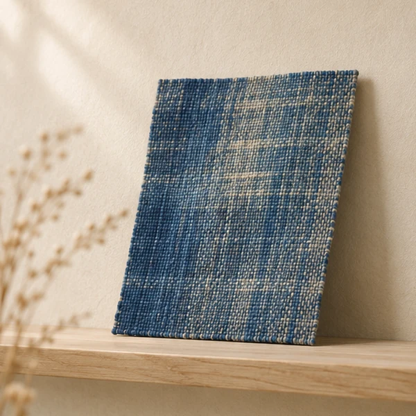
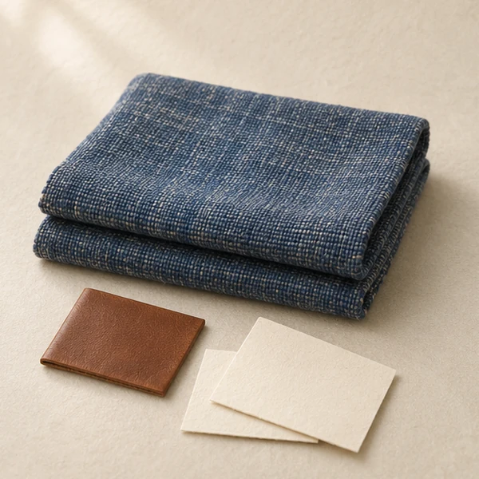
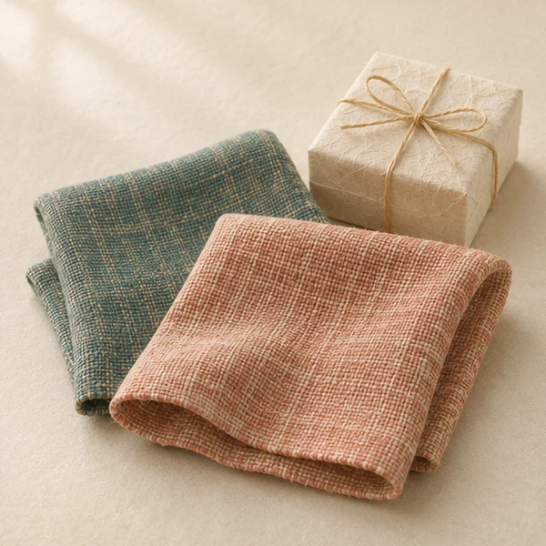

織る
縦と横の糸が交わるところに注目。間隔や太さが変わると、織り目のリズムも変わります。
架空の染織室のウェブサイト

糸の交わりに目を向けると織りの表情が、色の濃淡を追うと染めの表情が見えてきます。二つの図版で、まず違いを見比べます。

縦と横の糸が交わるところに注目。間隔や太さが変わると、織り目のリズムも変わります。

色が淡くなる境目に注目。濃いところから薄いところへ視線を移すと、一枚の布の中にも奥行きが生まれます。
図版は織りと染めの見え方を表したオリジナルの概念図です。
次は、布のどこを見ると違いに気づけるかをたどります。
糸の見方を読む色や質感の違いが伝わるよう、布を置く角度や光の入り方を変えた四つの習作です。
以下の画像は、布の色と質感を表現したAI生成イメージです。

AI生成イメージゆるい折り目の頂点から谷へ、明るい藍が深い影に変わるところ。

AI生成イメージ同じ青の面に、細い線と太い線が重なってできる密度の違い。

AI生成イメージざらりとした織り地と、隣の滑らかな面に光が当たる様子の違い。

AI生成イメージ赤みのある布と青みのある布を並べたとき、互いの色が引き立つ境目。
最初の画面に「織りと染め」「糸の見方」「布の表情」の入口を置き、関心のあるところから読める構成にしました。二つの技法は同じ大きさの図で並べ、布のカードは気になるものだけ説明を開けるようにしています。
架空の染織室を題材にしたWebデザインデモです。ページ内で図版と説明を閲覧できます。
ページの先頭へ